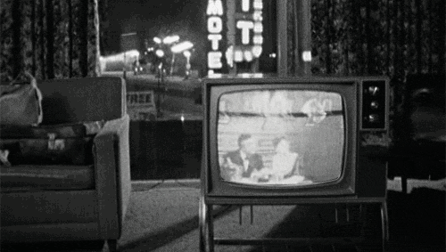
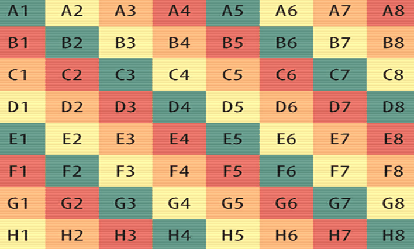

Unity Shader 学习 Old TV Effect

CRT显示器学名为“阴极射线显像管�?是一种使用阴极射线管（Cathode Ray Tube）的显示器。具体显像原理请�?a target="_blank" rel="noopener" href="https://en.wikipedia.org/wiki/Cathode-ray_tube">维基百科�?/p>
表现分析
通过各种资料的比对可以将表现分为几大�?/p>
- 播放表现
- 故障表现(另见Unity Shader 学习 Glitch Art)
- 拍摄表现
实现
渐晕效果
实现
1
2
3
4
5
6float Vignette(float2 uv,float time)
{
float vigAmt = 3.0 + 0.3 * sin(time + 5.0 * cos(t * 5.0));
float vignette = (1.0 - vigAmt * (uv.y - 0.5) * (uv.y - 0.5)) * (1.0 - vigAmt * (uv.x - 0.5) * (uv.x - 0.5));
return vignette;
}
畸变
实现
1
2
3
4
5
6
7float2 ScreenDistort(float2 uv)
{
uv -= float2(0.5, 0.5);
uv = uv * 1.2 * (1.0 / 1.2 + 2.0 * uv.x * uv.x * uv.y * uv.y);
uv += float2(0.5, 0.5);
return uv;
}
像素锯齿
- 实现
边缘的RGB分离
- 实现
线扫�?/span>
实现
1
2
3
4float ScanLine(float2 uv,float freq ,float time)
{
return frac(uv.y * freq + time);
}
Old TV Effect in Unity 3D
[2] VCR distortion
[3] Cathode-ray tube - Wikipedia
关于本文
本文作�?Master Gong Sheng, 许可�?CC BY-NC 4.0.
关于本文
本文作�?Master Gong Sheng, 许可�?CC BY-NC 4.0.